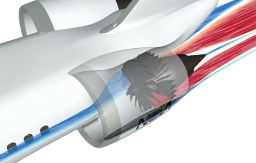
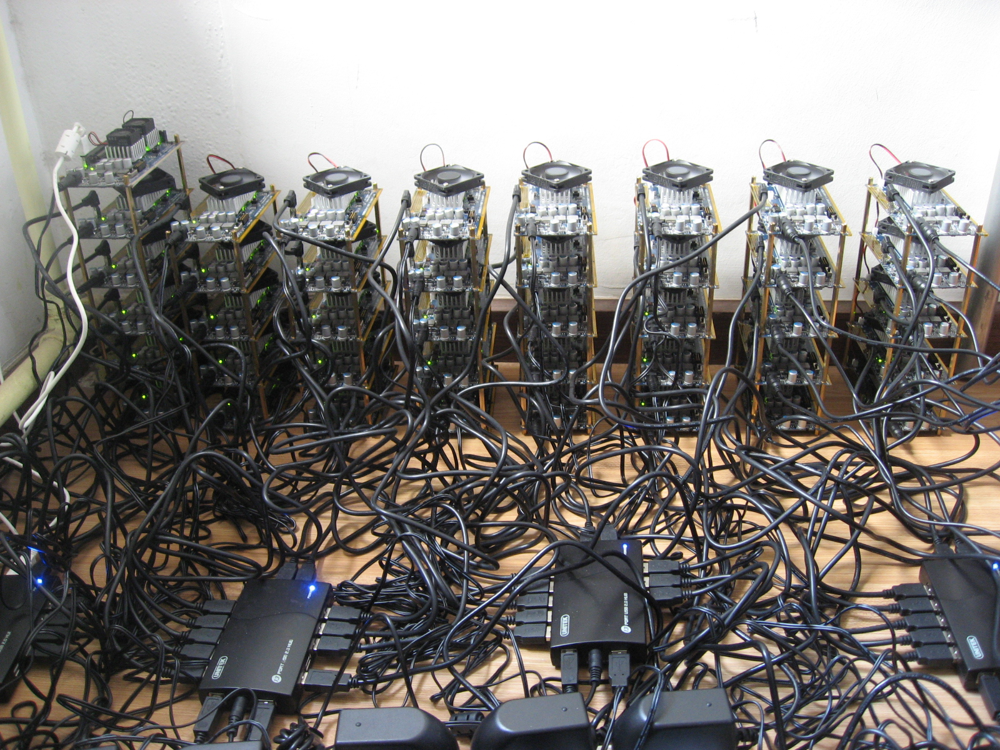

Jean-Sébastien Pédron <dumbbell@FreeBSD.org>
FOSDEM 2016
Jean-Sébastien Pédron <dumbbell@FreeBSD.org>
FOSDEM 2016
Use the GPU to perform general purpose computations.
Common APIs:
Scientific computations and simulations
Virtual currency mining
Provides 2D API and input events for applications and window managers.
Configures input and video devices
Uses "DDX" (device-dependent modules, the xf86-input-* and xf86-video-* packages) to access underlying drivers.
Provides 3D APIs for applications and compositing window managers.
Provides OpenCL for some GPUs.
Allows to do hardware-assisted video decoding and encoding.
Userland
Kernel
Kernel
Hardware
Reports input events to userland.
On FreeBSD, used either by TTY and moused(8) or directly by X.Org DDX (xf86-input-*).
Drives video devices:
|
VFS |
|||
ufs |
zfs |
msdosfs |
... |
|
DRM Core |
|||
i915 |
radeon |
nouveau |
... |
xserver 1.17 in the Ports tree.
Mesa 11.0 in the Ports tree.
Need to study what we have and what needs improvement.
Everything on GitHub:
Forked from official FreeBSD Git mirrors.
+--> xserver-next --> HEAD (svn) --+ | | | | +-------------------- master <-----+
More on DRM:
| Which target? | Which method? |
|
|
Any questions?